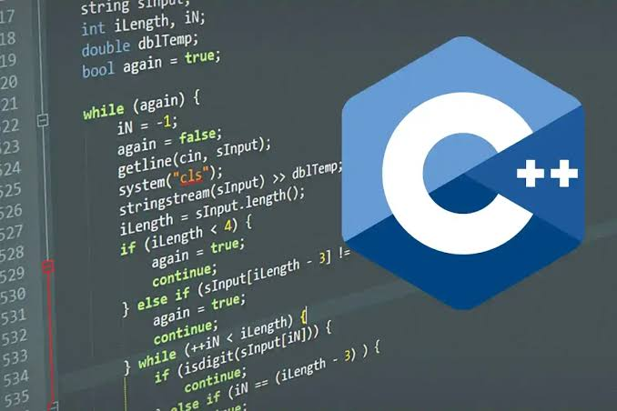
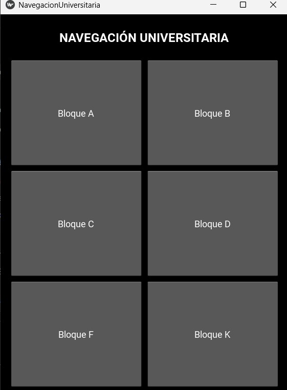
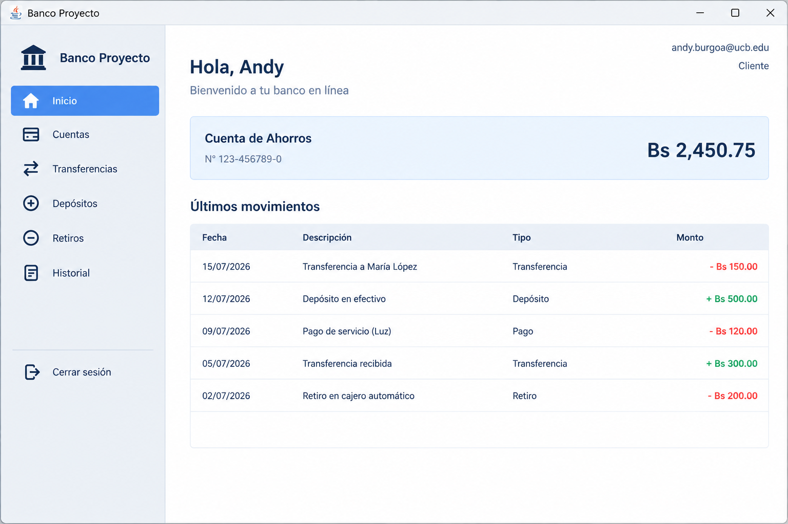

Ingeniería de Sistemas
En cursoUniversidad Católica Boliviana "San Pablo"
—
4 / 9 semestres
Hola, soy
Estudiante de Ingenieria de Sistemas · UCB San Pablo
La Paz, Bolivia andy.burgoa@ucb.edu.bo +591 69750437"Loque puede pasar, Va a pasar."
Ley de Murphy
Soy Andy Burgoa, estudiante de cuarto semestre de Ingenieria de Sistemas en la Universidad Catolica Boliviana "San Pablo". Naci el y tengo 20 años. Empece la universidad en Contaduria Publica, pero descubri que lo mio era resolver problemas con codigo, asi que cambie de carrera y no he mirado atras.
Me caracterizo por anticipar errores antes de que ocurran, revisando cada solucion mas de una vez antes de darla por terminada. Tengo fortalezas en programacion orientada a objetos, estucturas de datos y bases de datos, y disfruto aprender herramientas nuevas por cuenta propia.
Me interesa especializarme en desarrollo backend y ciencia de datos, combinando estructuras de datos eficientes con bases de datos relacionales. A futuro quiero profundizar en arquitectura de software y en el uso de inteligencia artificial aplicada a sistemas de informacion.
Universidad Católica Boliviana "San Pablo"
—
Universidad Mayor de San Andrés (UMSA)
Curse el primer año antes de cambiarme a Ingenieria de Sistemas; me quedó una base útil de números y organización que aplico en mis proyectos actuales.
Universidad Católica Boliviana ·
Apoyo a estudiantes de segundo semestre en el lenguaje C++: resolución de dudas, revisión de ejercicios y preparación de material de práctica.
Logro: mejora del desempeño de los estudiantes asistidos en las evaluaciones practicas.

Sistema que calcula y gestiona rutas de navegación utilizando estructuras de datos.
Ver código en GitHub
Aplicación de escritorio con manejo de cuentas, excepciones personalizadas, persistencia en archivos e interfaz gráfica JavaFX.
Ver código en GitHub
| Sigla | Asignatura | Nota final |
|---|---|---|
| FIL-107 | Pensamiento Crítico | 94 |
| MAT-122 | Matemáticas Discretas | 78 |
| MAT-123 | Álgebra Lineal | 63 |
| PCI-100 | Prueba de Colocación de Inglés | 43 |
| SIS-111 | Introducción a la Programación | 100 |
| SIS-123 | Ingeniería de Sistemas | 100 |
| Sigla | Asignatura | Nota final |
|---|---|---|
| FHC-102 | Antropología Cristiana | 74 |
| IDM-201 | Idioma Inglés Nivel 1 | 74 |
| MAT-132 | Cálculo I | 76 |
| MAT-142 | Probabilidad y Estadística I | 71 |
| MAT-251 | Investigación Operativa I | 67 |
| SIS-112 | Programación I | AHP |
| SIS-133 | Arquitectura Computacional y Sistemas Operativos | 86 |
| Sigla | Asignatura | Nota final |
|---|---|---|
| SIS-112 | Programación I | 100 |
| Sigla | Asignatura | Nota final |
|---|---|---|
| FIS-111 | Física I y Laboratorio | 64 |
| IDM-202 | Idioma Inglés Nivel 2 | AHP |
| IND-260 | Metodología de la Investigación | 79 |
| MAT-133 | Cálculo II | 79 |
| MAT-143 | Probabilidad y Estadística II | 76 |
| SIS-113 | Programación II | 74 |
| SIS-122 | Base de Datos I | 92 |
| Sigla | Asignatura | Estado |
|---|---|---|
| FHC-202 | Cristología | En curso |
| FIL-207 | Epistemología | En curso |
| MAT-252 | Investigación Operativa II y Laboratorio | En curso |
| SIS-211 | Estructuras de Datos | En curso |
| SIS-214 | Tecnologías Web I | En curso |
| SIS-221 | Base de Datos II | En curso |
| SIS-225 | Sistemas de Información | En curso |
| Idioma | Lectura | Escritura | Conversación |
|---|---|---|---|
| Español | Avanzado | Avanzado | Nativo |
| Inglés | Básico | Básico | Básico |
Esta es una canción que me gusta mucho.
¡Gracias! Tu mensaje quedó listo para enviarse.